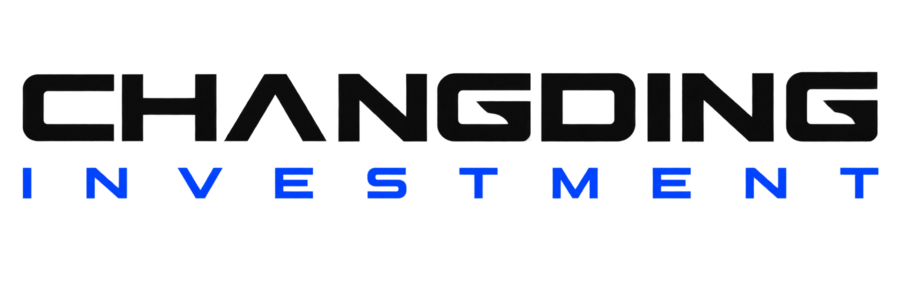

01↗
CORPORATE FINANCE
企业融资顾问
围绕企业发展阶段、资金用途与偿付能力，设计股权、债权及组合融资方案，协助完成融资材料、交易结构与投资人沟通。

海南长定投资有限公司HAINAN FREE TRADE PORT · INVESTMENT BANKING
立足海南自由贸易港，服务企业全生命周期资本战略，
为复杂交易提供清晰、审慎、可执行的解决方案。
长定投资 · 品牌影像
ABOUT CHANGDING
关于长定
海南长定投资有限公司是一家立足海南自由贸易港的专业投资与投行顾问机构。公司聚焦企业融资、并购重组、资本战略、跨境投融资、产业招商与资本市场研究，为企业、项目方及产业合作伙伴提供贯穿交易全流程的专业服务。
我们坚持从产业逻辑和真实价值出发，在充分识别风险的前提下设计交易结构，推动资本、产业、市场与专业资源高效协同。长定投资重视长期合作，不以单一融资结果定义服务，而是帮助企业建立可持续的资本能力。
INVESTMENT BANKING
投行业务
从企业战略出发，以尽职调查为基础，以交易结构为核心，以资源协同推动方案落地。
CORPORATE FINANCE
围绕企业发展阶段、资金用途与偿付能力，设计股权、债权及组合融资方案，协助完成融资材料、交易结构与投资人沟通。
M&A ADVISORY
为产业整合、资产收购、股权转让及战略合作提供交易策划、标的分析、估值研判、谈判支持与交割协同。
CAPITAL STRATEGY
从治理结构、股权架构、商业模式和资本路径出发，帮助企业建立与长期战略相匹配的资本运作体系。
CROSS-BORDER
依托海南自由贸易港区位与政策优势，为跨境投资、境外项目合作、SPV架构及国际资本对接提供专业支持。
INDUSTRIAL INVESTMENT
围绕地方产业资源、企业扩张需求与项目承载条件，开展产业研究、招商方案设计、资源对接和落地协同。
CAPITAL MARKETS
针对上市公司、拟上市企业及重点产业开展深度调查、竞争分析、价值评估与资本市场专题研究。
EXECUTION APPROACH
项目执行
每个项目均从目标与边界出发，形成清晰的工作路径、责任分工与决策依据。
识别企业诉求、交易目标与关键约束
核验业务、财务、资产、法律与合规基础
形成融资路径、交易结构与实施计划
对接适配的产业方、投资方与专业机构
协同谈判、文件、审批、交割与投后安排
CAPITAL · COMPLIANCE · COLLABORATION
治理与风控
长定投资将合规审查、利益冲突识别、信息分级管理与交易风险评估贯穿项目全程。重大事项坚持集体研判和专业复核，在效率与稳健之间保持必要平衡。
INSIGHTS
START A CONVERSATION
如果您正在规划融资、并购、跨境投资或产业合作，欢迎与长定投资建立联系。
info@hncdic.com ↗